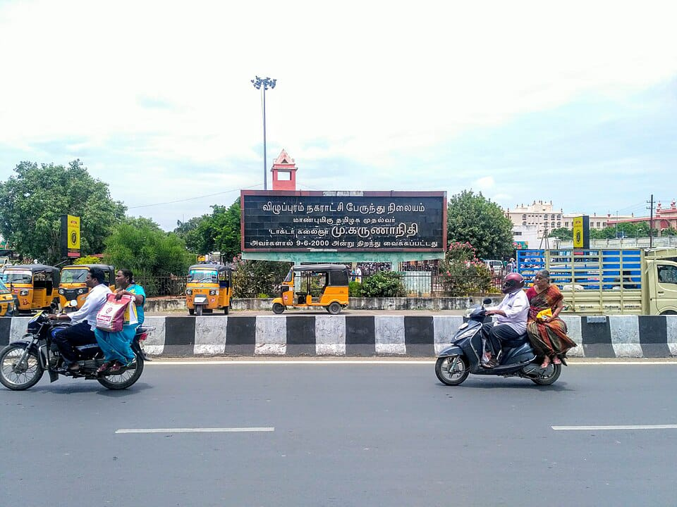

Villupuram New Bus Stand, inaugurated in 2000, is a major transport hub in Tamil Nadu. Located on NH 45 near the Collectorate, it spans 15 acres and features 68 bus bays, shops, hotels, waiting halls, and parking facilities. It serves as a key junction for buses connecting Tamil Nadu and neighboring states.